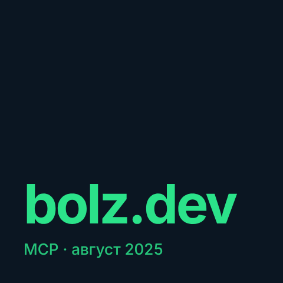
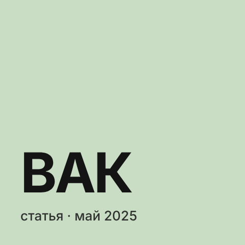
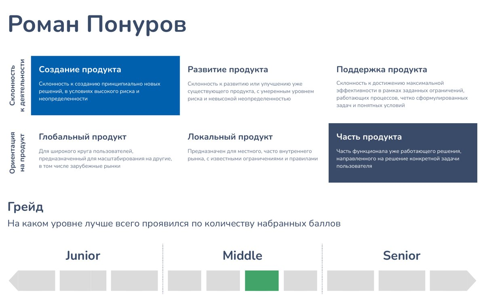
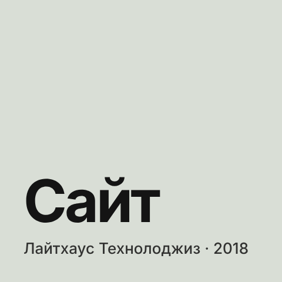

Посты — страница 2
-

bolz.dev — MCP-коннектор, через который ИИ-агенты совершают реальные действия В августе 2025 года мы собрали MVP bolz.dev — платформы на Model Context Protocol, через которую ИИ-агенты не просто советуют, а доводят дело до конца: находят, бронируют и оплачивают реальные сервисы. -

Первая статья ВАК — как российские компании применяют ИИ в менеджменте Вышла моя первая научная статья — «Характерные особенности применения искусственного интеллекта в менеджменте российских компаний» в журнале «Экономика и управление: проблемы, решения» (2025, т. 7, № 6). -

Что показала независимая оценка менеджеров продукта в МТС В апреле 2022 года МТС провела независимую оценку менеджеров продукта: тестирование делала компания Assessty. В это время я развивал MTS ID — единую авторизацию для продуктов МТС. -
 Магистерская в ВШЭ — как оценить, окупится ли цифровая трансформация
Моя магистерская работа на программе «Корпоративные финансы» факультета экономических наук НИУ ВШЭ — «Моделирование и оценка эффективности инвестиционных проектов в области цифровой трансформации компании». По сути, с неё началась моя исследовательская линия, которую я сейчас продолжаю в аспирантуре РАНХиГС уже про ИИ.
Магистерская в ВШЭ — как оценить, окупится ли цифровая трансформация
Моя магистерская работа на программе «Корпоративные финансы» факультета экономических наук НИУ ВШЭ — «Моделирование и оценка эффективности инвестиционных проектов в области цифровой трансформации компании». По сути, с неё началась моя исследовательская линия, которую я сейчас продолжаю в аспирантуре РАНХиГС уже про ИИ. -

С чего начался мой путь в продукт — первый сайт для промышленной компании До продакт-менеджмента я был инженером и продавал промышленное оборудование. Первым «продуктом» в моей жизни стал сайт компании «Лайтхаус Технолоджиз», где я работал менеджером по развитию бизнеса.